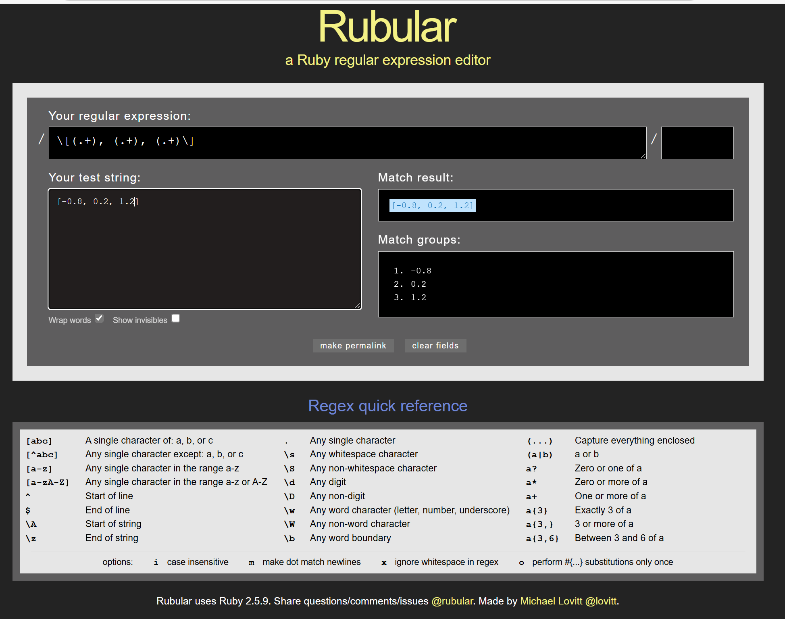

rubular チャート式ruby-appendix-Vより
正規表現，ファイルの読み込み
Table of Contents
1 正規表現regular expression
文字情報を取り出す便利ツールが正規表現(regular expression)です． これって覚えようとして挫折したことないですか？ 私はRegExpを10年以上使えなくて，本を何冊もトライしたんですが，途中で諦めました． でもね．http://rubular.com でわずか10分でバリバリ使えるようになってました． コツは，やっぱりTDDです．
2 rubular
|  |
| Rubularの画面 |
Rubularの画面を見てください． 一番上に正規表現を入れます． 左下にtest stringを入れます． そうすると右に抽出結果が出てきます．
まずはtest文字列として
line = '* fix calc kpoints:50, in_plane:0.98, vertical:1.00'
を考えます．
これから数値の配列[0.98, 1.00]を取り出します． まず，取り出す文字列(capture everything enclosed)は
(.+)
で取り出されます．any single caharacterを表す'.'と，一つ以上を表す(+)を入れています． これからいらん文字を外していくと考えてください． 少し試行錯誤すれば，
: in_plane:(.+), vertical:(.+)
なんかで数値だけが取り出せたでしょうか？
正規表現ってたくさん覚えないといけないと思いがちですが， Regex quick referenceにまとめられている要素だけでできています． 大きく分類すると，
- 範囲指定(左列上)，
- 位置指定子(左列下)
- 文字指定子(中列)
- 量指定子(右列)
です． さらに丸括弧()で抽出になります． あとは，そのアンチョコ（カンペ）を見ながら，試行錯誤するだけなんですね． どうです，TDDでしょ．
3 rubyでの利用
rubyに組み込むには，
# "../finite_state_machine/test_multiple_methods.rb" line = "* fix calc kpoints:50, in_plane:0.98, vertical:1.00" string = Regexp.new("\\* fix calc kpoints:50, in_plane:(.+), vertical:(.+)") line =~ string p [$1.to_f, $2.to_f] #=> [0.98, 1.00] res = line.scan(string) p res #=> [["0.98", "1.00"]] p res[0].map(&:to_f) #=> [0.98, 1.0] p m = line.match(string) #=> #<MatchData "* fix calc kpoints:50, in_plane:0.98, vertical:1.00" 1:"0.98" 2:"1.00"> p [m[1].to_f, m[2].to_f] #=> [0.98, 1.0] require 'scanf' p line.scanf("* fix calc kpoints:50, in_plane:%f, vertical:%f") #=>[0.98, 1.0]
などとします．それぞれにちょっとした特徴がありますが， どれを使ってもうまくいくときにはうまくいきます．
4 tagつきのregexp
さらにこの頃，気がついた手法で，tagをつけるのがあります．
string = Regexp.new('in_plane:(?<x>.+), vertical:(?<y>.+)') res = line.match(string) => #<MatchData "in_plane:0.98, vertical:1.00" x:"0.98" y:"1.00"> irb(main): > res[:x] => "0.98" irb(main): > res[:y] => "1.00"
:x とか :y というsymbolで取れます．
'=~' だとさらに
irb(main):001:0> line = '* fix calc kpoints:50, in_plane:0.98, vertical:1.00' => "* fix calc kpoints:50, in_plane:0.98, vertical:1.00" irb(main):003:0> /in_plane:(?<x>.+), vertical:(?<y>.+)/ =~ line => 23 irb(main):004:0> x => "0.98" irb(main):005:0> y => "1.00"
対応した名前がついたローカル変数(local variables with corresponding names)になります．
えっとでも，数値を取り出すときはscanf("%i, %f")も便利です．
C言語と同じformatです． regexpで取り出すと文字列なんで，to_fとかto_iでfloat, intに変換する必要がありますが， scanfで取り出すとそのままのtypeで取り出されます．